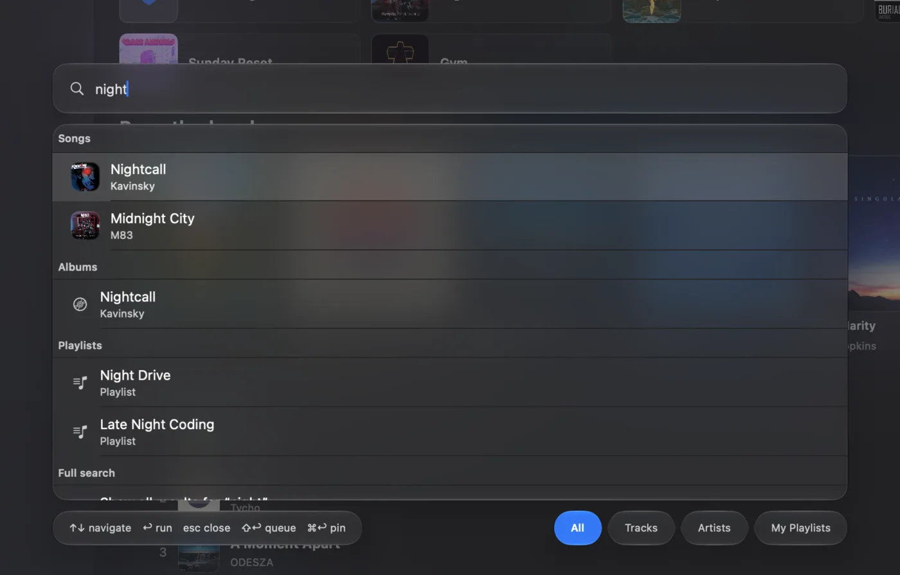

Spotlight for your library
Command Palette
Hit ⌘K and reach anything — playlists, artists, albums, tracks, and every action. Fuzzy search that actually finds it. Pin the result with ⌘↩, queue it with ⇧↩, never touch the trackpad.
⌘Kto open, anywhere
